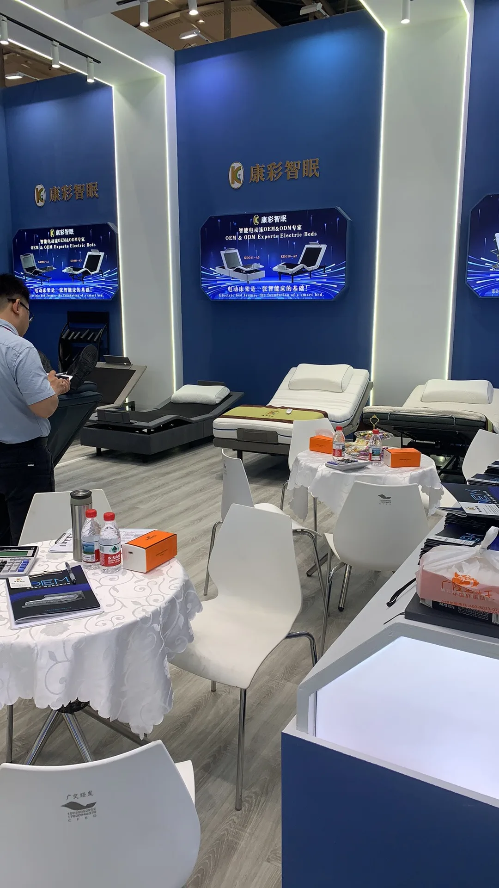

What buyers tested before asking for a quote.
At the booth, the most useful discussions started with motion feel, frame compatibility, upholstery direction, destination market and expected order quantity—not a generic price request.
Discuss Your Buying Brief